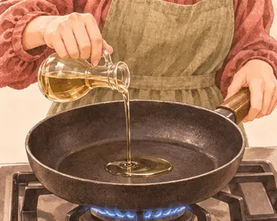
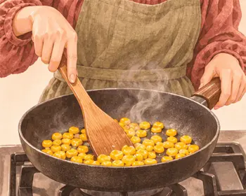
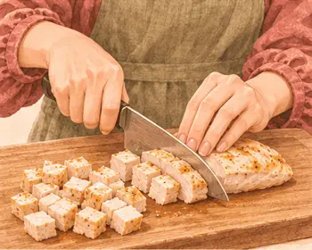
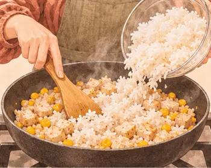
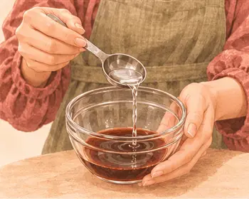
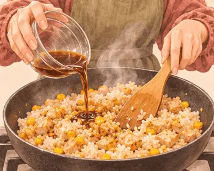

عشاء ما بعد التمرين · بعد النادي
أرز بالدجاج والذرة والصويا
٥١٠ سعرة للحصة٨–١٢ دقيقة
بروتين٤٧ غ
كربوهيدرات٥٦ غ
دهون١٠ غ
ألياف٢.١ غ
كالسيوم٤١ ملغ
حديد٣.٦ ملغ
بوتاسيوم٥٢٥ ملغ
فيتامين ج١ ملغ
القيم الغذائية تقديرية للحصة الواحدة.

مكوّناتك
الوزن بالجرام · حدّد ما جهّزته
| المكوّن | حصة | ٣ حصص | ٤ حصص |
|---|---|---|---|
| ١٣٠ | ٣٩٠ | ٥٢٠ | |
| ١٦٠ | ٤٨٠ | ٦٤٠ | |
| ٧٠ | ٢١٠ | ٢٨٠ | |
| ١٠ | ٣٠ | ٤٠ | |
| ٤ | ١٢ | ١٦ |
الأدوات · مقلاة واسعة، ملعقة
خطوة صغيرة، وطبق لذيذ
يلا، نطبخها معًا.
خذ وقتك، واتبع الصور على راحتك.
الخطوة٠١
صفِّ الذرة.

الخطوة٠٢
سخّن الزيت على نار متوسطة.

الخطوة٠٣
قلّب الذرة دقيقتين.

الخطوة٠٤
قطّع الدجاج المطبوخ مكعبات.

الخطوة٠٥
أضف الأرز والدجاج وفكّك كتل الأرز.

الخطوة٠٦
اخلط الصويا بملعقة ماء.

الخطوة٠٧
اسكبها في المقلاة وقلّب حتى تسخن الوجبة كلها.